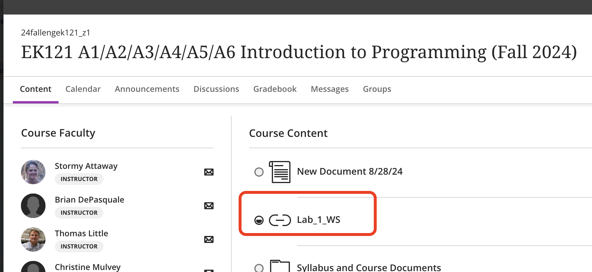
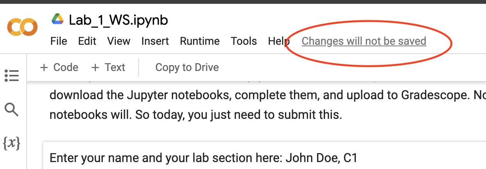
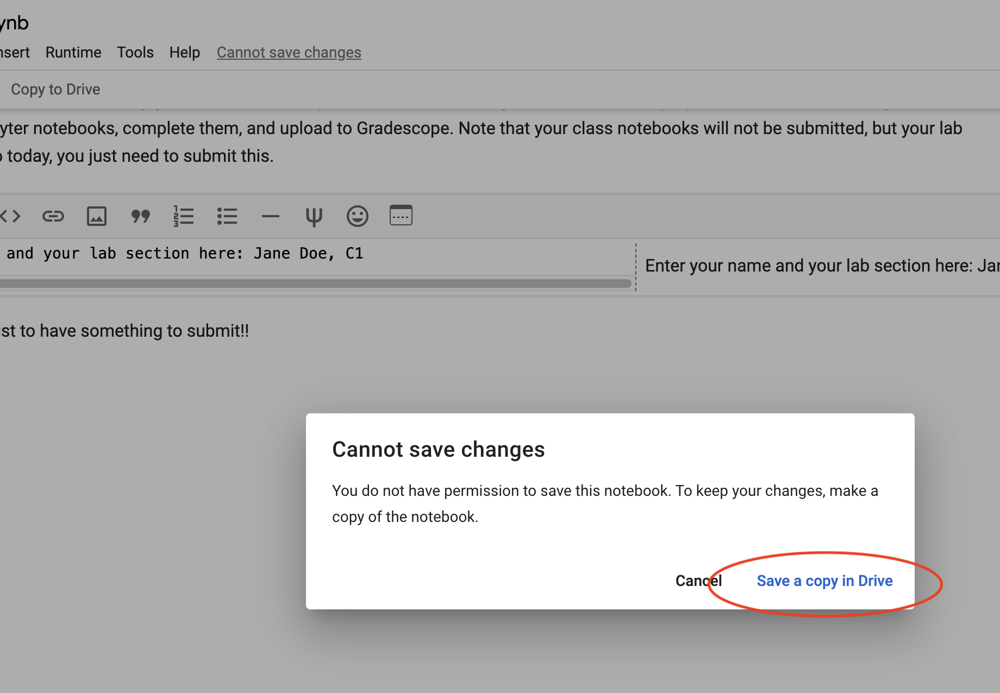
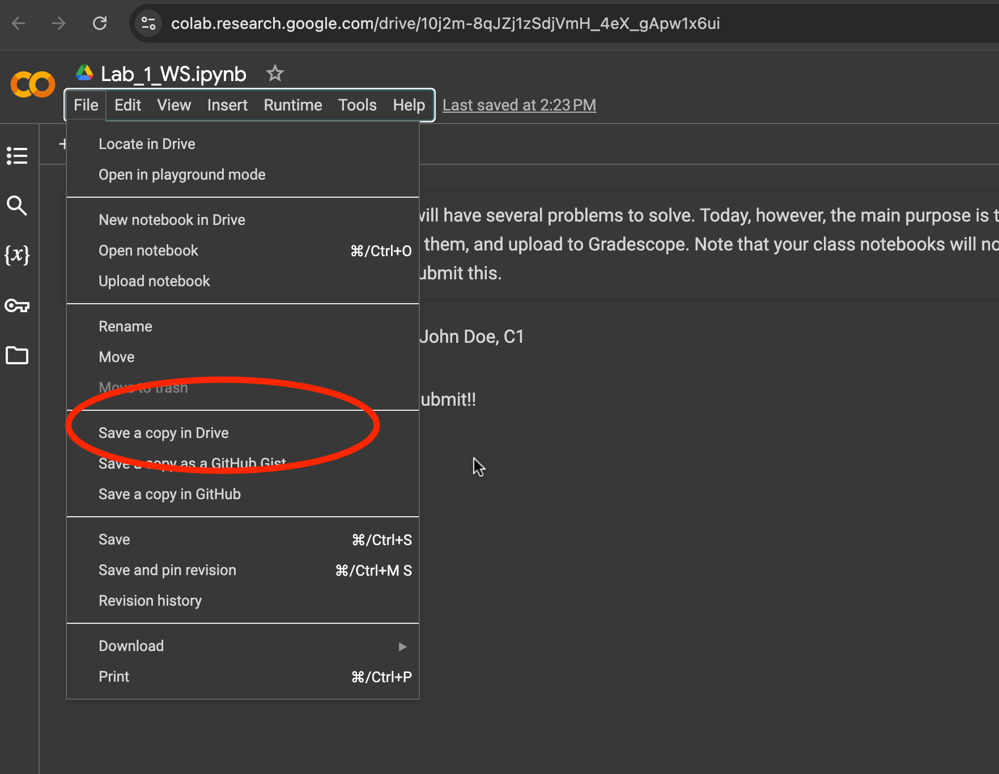
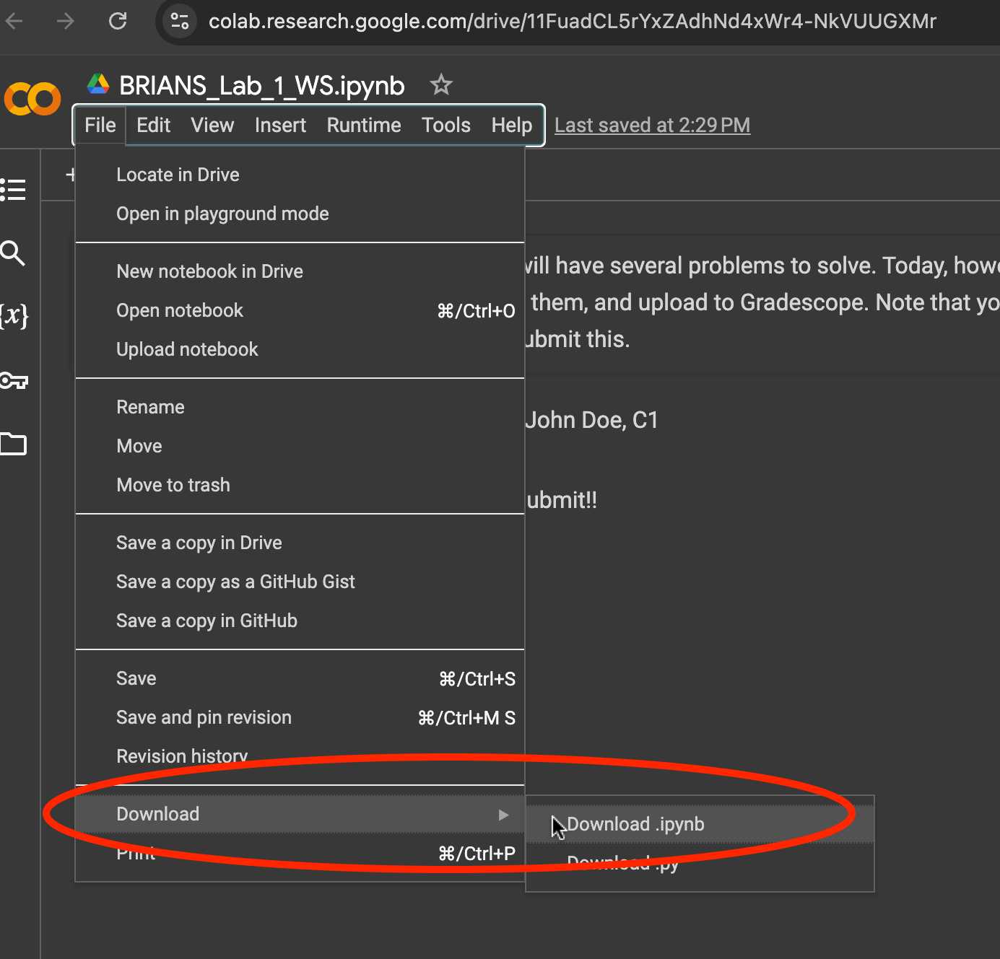
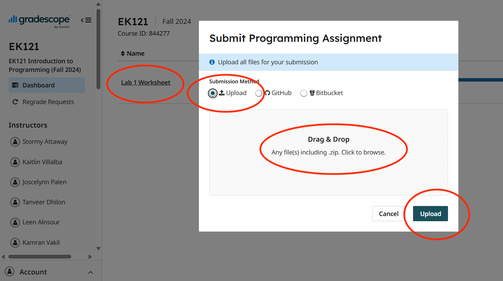

Instructions to receive and submit assignments#
Many coding assignments will be completed as a jupyter notebook, to be done in Google colab. These assignments will be distributed through blackboard and collected by gradescope. Below are instructions to do this! This is just an example – file names will be different from submission to submission.
Getting coding assignments#
In blackboard, click the link to the assignment you want.

This will open the link to a Google Colab notebook. This notebook is read only. You may click immediately on “Changes will not be saved” to create a personal copy on your personal Google Drive.

Then click “Save a copy in Drive.” This will save a copy of the notebook in your BU google drive.

(Alternatively, select ‘File > Save a copy to Drive’. This is an alternative route to copying the notebook to your personal Google drive account.)

Complete your work in your Google Colab. Colabs are pretty good about auto saving your work, but be sure to save things periodically as you are working to make sure nothing is lost. Make some changes, save your work. Do all the work in the colab, on the cloud.
When you are done working, and ready to submit your assignment, make sure that you have run all of your code blocks so any output ends up in your submission, then download your completed work. This will download this to your computer.

{kind=link}
{kind=link}
{kind=link}
{kind=link}
{kind=link}
Submission#
To submit your downloaded assignment, you need to upload it to Gradescope. If you didn’t download your assignment yet, proceed back to step #5.
Login to gradescope at www.gradescope.com with your Boston University credentials.
Click on EK125.
Click on the assignment you want to submit (e.g. in the example below it’s “Lab 1 Worksheet”) and upload it.

{kind=link}